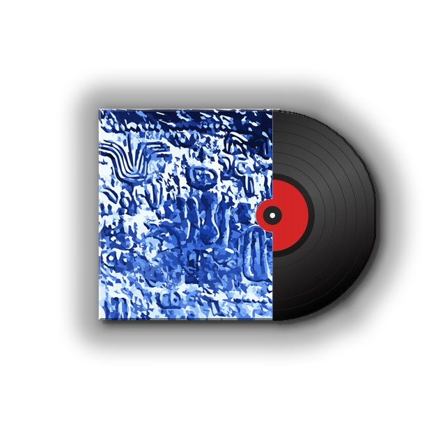
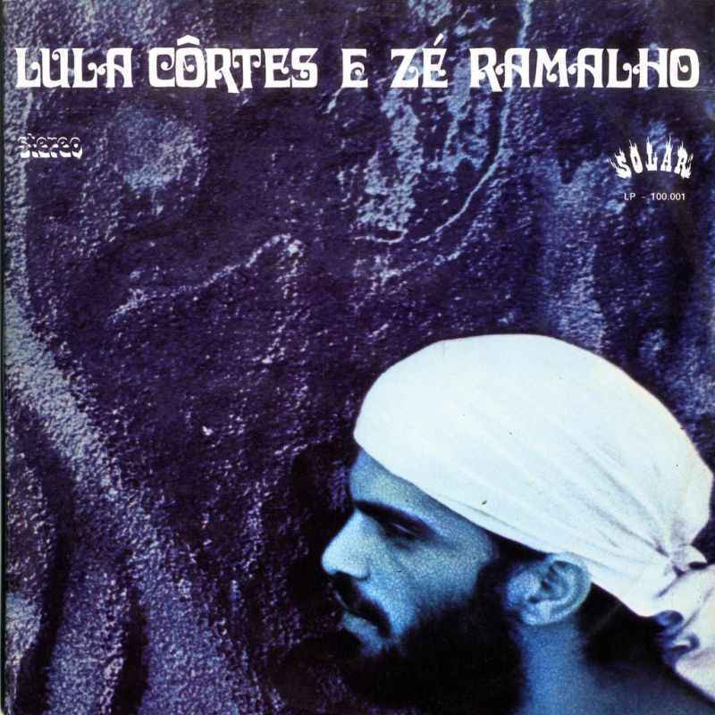

Edição Especial do
PaeBiru
Adquira já esta EDIÇÃO ESPECIAL LIMITADA do disco mais RARO do Brasil!!!
Com NOVA identidade visual feita pela ilustradora
ORIGINAL, Kátia Mesel e músicas REMASTERIZADAS.
Por apenas: R$ 599,99
ou 10x R$ 59,90
Compre já

"Minha ispiração veio da própria rocha onde o Disco foi
criado"
Katia Mesel

A artista manteve a paleta de cores e seu conceito sinestésico intocados,
mas oferece uma perspectiva visual totalmente contemporânea
"Uma nova cara para velha psicodelia"
Lula Côrtes
Rafael Ramos, produtor musical e também consultor da fábrica, fala do álbum:
"O Paêbirú
representa
o experimentalismo na fase seminal desses dois artistas, antes de virem pro Sudeste trabalhar suas
carreiras
junto a produtores e gravadoras. Então, é a música em seu estado mais puro, sem obrigações"
“A música a milênios se diz infinita. Nos seus compassos,
nas suas harmonias, nas inumeráveis interpretações, sendo assim,
ela é o retrato da alma”
Lula Côrtes